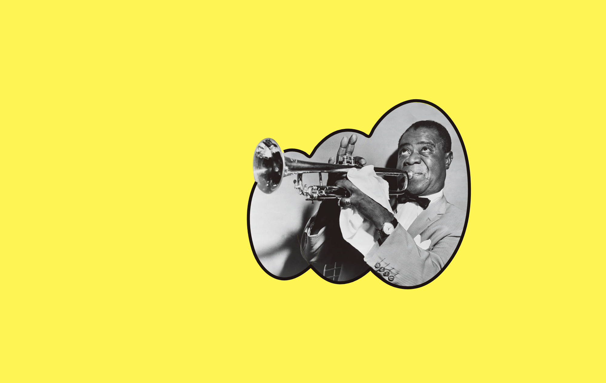
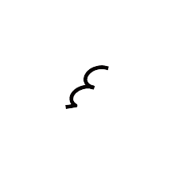
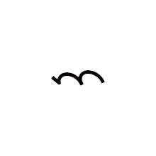
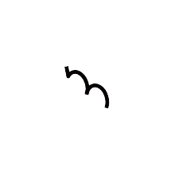

비밥(bebop)체는 재즈 음악을 듣다보면 느껴지는 리듬감을 시각화한 서체이다. 직선을 그리다가 곡선이 나타나며 자유로운 방향성을 가진 이 서체는 재즈와 비밥을 표현한다.
   재즈는 음악 장르로, 연주자들의 즉흥적인 상호작용과 협동에 중심을 둔 음악이다. 새로운 사운드의 순간적인 연출, 즉흥성이 강조되는 재즈는 현재에 집중한다. 순간을 즐기며 음을 쏟아내는 연주는 즉석에서 창작되기 때문에 악보 음악이라기 보다는 연주 과정 자체가 창작이며 재즈다운 예술이다.
비밥(Bebop)은 우리가 자유분방한 재즈 연주 스타일을 말한다. 복합적인 코드 진행과 다양한 코드의 변화 및 확장, 비대칭적인 악구와 복잡하게 얽힌 멜로디, 빠른 템포로 전개되는 격렬한 즉흥연주의 특징을 가진다. 이 혁신적인 사운드와 함께 모던 재즈는 시작되었다.
진행중
정해진 음악 안에서 순간의 즉흥성이 강조되는 비밥처럼, 이 서체는 사각형을 기본 폭으로 베이스를 만든 후, 서체의 스템(stem)과 원을 20도 기울였다.
재즈의 즉흥적이고 변칙적인 음의 변화를 터미널(terminal)과 풋(foot)으로 표현했는데, 서체가 직선을 그리다가 곡선으로 마무리되거나 곡선으로 이어지다 직선으로 끝이난다.